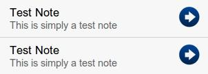

- Introducción
- 1. Introducción al desarrollo Web
- 2. Introducción a JavaScript
- 3. Diseño Responsive
- 4. Diseño Responsive avanzado
- 5. JQuery Mobile
- 6. JQuery Mobile avanzado
- 7. Sencha Touch 1. Introducción
- 8. Sencha Touch 2. Componentes
- 9. Sencha Touch 3. Almacenamiento
- 10. PhoneGap 1. Introducción
- 11. PhoneGap 2. Avanzado
- 12. Laravel 1. Introducción
- 13. Laravel 2. Controladores, filtros y formularios
- 14. Laravel 3. Base de datos
- 15. Laravel 4. Datos de entrada y control de usuarios
- 16. Laravel 5. Paquetes, Rest y Curl
- 17. Servicios Rest
- Published using GitBook
Sencha Touch 3 - Almacenamiento
En esta sección vamos a ver las opciones que tenemos para trabajar con los datos de una aplicación. Para esto Sencha Touch pone a nuestra disposición varias herramientas:
- Data Model: Nos permitirá representar las entidades de datos como colecciones de campos con sus datos asociados.
- Data Store: Son colecciones de datos de un modelo. Además nos permitirá realizar otro tipo de operaciones más avanzadas como ordenar, filtrar, agrupar o lanzar eventos.
- Proxy: Permiten cargar y almacenar los datos desde una fuente de datos remota o local en un data model o un data store.
Además también se estudiarán varias formas de utilizar estos datos en una aplicación, por ejemplo en listados, data views o en formularios. A continuación veremos en detalle cada uno de estos apartados.
Data Model
Los Data Model nos permiten representar las entidades de datos, junto con sus validaciones de formato y las relaciones con otros modelos, como si estos fuera objetos o clases. Por comparación podríamos pensar que un Data Model es como una clase (en POO) con la definición de los datos que la componen y funciones para poder validar y trabajar con esos datos.
A continuación podemos ver un esquema de todas las opciones que agrupa un Data Model, las cuales iremos viendo se las siguientes secciones:

Definir un modelo
Para crear un modelo usamos el constructor Ext.define('<Model-Name>', { ... }), en el que como primer parámetro indicamos el nombre del modelo a crear y como segundo parámetro recibe un objeto con la configuración del modelo. En la configuración de modelo tendremos que indicar dos cosas: que hereda de la clase Ext.data.Model y los campos que definen al modelo. Por ejemplo:
Ext.define('User', { // Nombre del modelo: User
extend: 'Ext.data.Model',
config: {
fields: [ // Descripción de los campos que lo componen
{ name: 'id', type: 'int' },
{ name: 'usuario', type: 'string' },
{ name: 'nombre', type: 'string' },
{ name: 'genero', type: 'string' },
{ name: 'activo', type: 'boolean', defaultValue: true},
{ name: 'fechaRegistro', type: 'date', dateFormat: 'c' }
]
}
});
En este ejemplo hemos creado el modelo User con cinco campos. Por defecto, en todos los modelos se asigna como identificador principal el campo id, el cual se utiliza para varias cosas (como saber si el modelo ha sido guardado). Si queremos variar el campo identificador podemos hacerlo con idProperty: 'id'.
Al heredar de la clase Ext.data.Model obtiene una serie de métodos y propiedades que nos van a permitir trabajar con los datos del modelo y almacenarlo de forma permanente.
En la sección fields se definen el resto de campos que componen el modelo. Para cada campo podemos utilizar:
- name: nombre o identificador del campo.
- type: los campos pueden ser de cinco tipos: string, int, float, boolean, date, auto.
- defaultValue: atributo opcional que nos permite indicar el valor por defecto de un campo.
- dateFormat: atributo opcional mediante el cual podemos indicar el formato de la fecha (ver http://docs.sencha.com/touch/2.4/2.4.1-apidocs/#!/api/Ext.Date).
Cuando se asigna el tipo auto o no se asigna ningún tipo el campo podrá obtener cualquier tipo de valor y no realizará ninguna validación de formato.
Crear una instancia de un modelo
Para crear una instancia de un modelo utilizamos también el constructor Ext.create('<Model-Name>', { ... }) especificando el nombre del modelo del cual queremos crear una instancia y un objeto con los valores a asignar a la instancia. Por ejemplo:
var ed = Ext.create('User', {
usuario: 'ajgallego',
nombre: 'Javier Gallego',
genero: 'Masculino',
activo: true
});
Validaciones
Los modelos de datos incluyen soporte para realizar validaciones, las cuales las deberemos de incluir dentro de la misma clase a continuación del campo fields. Por ejemplo:
Ext.define('User', {
extend: 'Ext.data.Model',
config: {
fields: [
// ...
],
validations: [
{ type: 'presence', field: 'nombre' },
{ type: 'length', field: 'nombre', min: 5 },
{ type: 'format', field: 'usuario', matcher: /([a-z]+)[0-9]{2,3}/},
{ type: 'inclusion', field: 'genero', list: ['Masculino', 'Femenino'] },
{ type: 'exclusion', field: 'usuario', list: ['admin'] }
]
}
});
Los tipos de validaciones que podemos utilizar son los siguientes:
- presence: Indica que el campo es requerido.
- length: Valida la longitud del campo. Podemos indicar como atributos un mínimo (min) y/o un máximo (max).
- exclusion: Valida que el valor del campo no se encuentre entre la lista de valores especificados en list.
- inclusion: Valida que el valor del campo se encuentre entre la lista de valores especificados en list.
- format: Permite especificar una expresión regular (mediante el atributo matcher) para validar el campo.
Además, definiendo el valor de la propiedad message, podemos cambiar el mensaje de error que se produciría si una validación no es correcta:
{ field: 'titulo', type: 'presence',
message: 'Por favor, introduzca un título' }
Cuando trabajemos con un formulario y queramos comprobar estas validaciones lo tendremos que hacer manualmente llamando a la función validate(). A continuación se incluye un ejemplo:
var newUser = Ext.create('User', {
nombre: 'Javi',
usuario: 'admin',
genero: 'género no válido'
});
var errors = newUser.validate();
console.log('Válido?', errors.isValid()); // 'false' si hay errores
console.log('Errores:', errors.items); // array con los errores encontrados
console.log('Errores en género:', errors.getByField('genero'));
Además, como se puede ver en el ejemplo también disponemos de las funciones isValid() para comprobar si han habido errores, .items para obtener el array de errores encontrados y getByField('<nombre-del-campo>') para obtener los errores de un campo dado. En la sección de formularios se verá como integrar la validación de un modelo con un formulario.
Relaciones con otros modelos
Los modelos de datos también soportan la creación de relaciones con otros modelos de datos, del tipo "hasMany" y "belongsTo". Estos contenidos se quedan fuera de este capítulo de introducción por lo que para obtener más información podéis consultar la web:
http://docs.sencha.com/touch/2.4/core_concepts/data/models.html
Uso de modelos de datos en una aplicación
Al crear un modelo lo que estamos haciendo en realidad es crear una nueva definición de una clase (y no una instancia de una clase). Se puede observar la diferencia en el constructor, ya que usamos Ext.define('<nombre-modelo>', { ... }); en lugar de Ext.create.
En estos casos, en los que creemos nuevas definiciones, estaremos obligados a cargarlos por separado. Para ello Sencha Touch incorpora un potente sistema que nos permite modularizar nuestro código siguiente el patron MVC muy fácilmente. Solamente tendremos que seguir los siguientes pasos:
Crear una fichero con el mismo nombre que el modelo dentro de la carpeta
app/model. Si por ejemplo nuestro modelo se llamaUserel fichero se tendrá que llamarUser.js.El contenido del fichero del modelo seguirá la sintaxis que hemos visto hasta ahora pero añadiendo el espacio de nombres
<nombre-app>.model.<nombre-modelo>al nombre del modelo, por ejemplo si nuestra aplicación se llamaseMyAppy el modelo a crearUser, el modelo tendría que quedar como el siguiente:
Ext.define('MyApp.model.User', { // Nombre del modelo con espacio de nombres
extend: 'Ext.data.Model',
config: {
fields: [
{ name: 'id', type: 'int' },
{ name: 'name', type: 'string' }
]
}
});
- Por último tendremos que decirle a nuestra aplicación que cargue la definición del modelo para que podamos utilizarla. Para esto simplemente tenemos que hacer:
Ext.application({
name: 'MyApp',
models:['User'],
launch: function() { ... }
});
A la hora de cargar el modelo podemos indicarlo usando solamente el nombre del modelo o usando el espacio de nombres completo (MyApp.model.User). Pero a la hora de utilizarlo (por ejemplo, para crear una instancia del modelo o asociarlo a un store) tendremos que usar la ruta del espacio de nombres completa.
Data Store
Los almacenes de datos (data store) se utilizan para encapsular o almacenar una colección de instancias de un modelo determinado. Además disponen de funciones para ordenar, filtrar y consultar los datos. De forma opcional podemos indicar que utilicen un proxy para sincronizar estos datos con un almacén local o remoto.
En esta sección nos vamos a centrar en las características para gestionar un store: añadir, ordenar, filtrar, buscar y eliminar. En la siguiente sección sobre proxies veremos como hacer persistentes estos datos.
Crear un Data Store
Crear un almacén de datos es fácil, utilizaremos el constructor Ext.create('Ext.data.Store', {...}) y como segundo parámetro le pasaremos las opciones de configuración indicando el nombre del modelo:
var myStore = Ext.create('Ext.data.Store', {
model: 'User'
});
Añadir datos
Podemos añadir datos directamente junto a la definición de un Store, solo tenemos insertarlos como un array a través de su propiedad "data". Suponiendo que el modelo "User" solo tuviera dos campos (id, name), podríamos añadir datos de la forma:
var myStore = Ext.create('Ext.data.Store', {
model: 'User',
data: [
{id: 1, name: 'Javier Gallego'},
{id: 2, name: 'Fran García'},
{id: 3, name: 'Boyan Ivanov'},
{id: 4, name: 'Miguel Lozano'}
]
});
O también podemos añadir datos posteriormente llamando a la función "add" del objeto:
myStore.add({id: 5, name: 'Javier Aznar'},
{id: 6, name: 'Pablo Suau'});
Ordenar y Filtrar elementos
Para ordenar y filtrar los datos usamos las propiedades "sorters" y "filters". En el siguiente ejemplo se ordenan los datos de forma descendente por nombre de usuario (también podría ser ASC) y se realiza un filtrado por género (los filtros también admiten expresiones regulares).
Ext.create('Ext.data.Store', {
model: 'User',
sorters: [
{ property: 'usuario', direction: 'DESC' }
],
filters: [
{ property: 'genero', value: 'Femenino' }
]
});
Buscar registros
En algunos casos antes de añadir un registro será necesario comprobar si el registro está repetido. Para esto podemos utilizar el método findRecord(campo, valor) del Store, el cual devuelve el registro encontrado o null en caso de no encontrar ninguna coincidencia. En el siguiente ejemplo se compara el campo id de los datos del Store, con el campo id del registro a añadir:
if (myStore.findRecord('id', registro.data.id) === null)
{
myStore.add( registro );
}
Otra opción para buscar registros es la función find(campo, valor) la cual devuelve el índice del registro encontrado (o -1 en caso de no encontrarlo), y posteriormente podríamos llamar a getAt(index) para obtener los datos.
Eliminar registros
Para eliminar un registro de un Store usaremos la función remove(registro), por ejemplo:
myStore.remove( registro );
Es recomendable comprobar si existe el registro a eliminar, para esto usaremos la función findRecord(). Normalmente el Store estará asignado a algún panel que nos permita ver los datos (como un listado). Si quisiésemos eliminar un registro de este listado, primero tendríamos que obtener el Store usado, a continuación comprobar si existe el registro y si es así eliminarlo. Por último habría que sincronizar los datos para que se visualicen, de la forma:
var store = miListado.getStore();
if( store.findRecord('id', registro.data.id) )
{
store.remove( registro );
}
store.sync();
miListado.refresh();
También podemos utilizar la función removeAt(index) para eliminar los registros de un Store a partir de su índice.
Proxy
Los proxies se utilizan para definir la forma de leer y escribir la información. Dependiendo del proxy que utilicemos podremos almacenar los datos de forma local o de forma remota. Además, estos pueden ser definidos tanto en el data store como en el data model.
Los posibles proxies u opciones de almacenamiento que podemos usar son:
Almacenamiento en local:
- Memoria (memory): almacenar los datos en memoria.
- Local Storage (localstorage): almacenar los datos usando la nueva característica de HTML5 de almacenamiento en local.
- Session Storage (sessionstorage): almacenar los datos usando la nueva característica de HTML5 de almacenamiento en local pero por sesión (al cerrar la sesión se borrarán los datos).
- SQL (sql): almacenar los datos usando la nueva característica de HTML5 de almacenamiento en una base de datos local de tipo WebSQL.
Almacenamiento en remoto:
- Ajax (ajax): Genera peticiones ajax para cargar o enviar los datos a un servidor.
- JsonP (jsonp): JSONP o JSON con padding es una técnica de comunicación utilizada para realizar llamadas asíncronas a dominios diferentes y de esta forma evitar los errores por peticiones cross-domain.
- Rest (rest): Especialización del proxy ajax para realizar peticiones a un servidor RESTful.
A continuación se tratarán las posibles formas de definición de un proxy y algunos ejemplos de uso usando los tipos ajax, localstorage y rest.
Definir el proxy en el Data Store
En un Data Store, además de definir el modelo asociado, podemos definir el proxy a utilizar. En el siguiente ejemplo se configura un proxy de tipo ajax, además se le proporciona la url con la dirección para acceder a los datos y la propiedad reader para especificar el tipo de datos con los que tiene que trabajar.
var myStore = Ext.create('Ext.data.Store', {
model: 'User',
proxy: {
type: 'ajax',
url : 'users.json',
reader: 'json'
},
autoLoad: true
});
Además hemos añadido la propiedad autoLoad: true para que se carguen los datos al inicio desde el proxy indicado. Si no lo hiciéramos así el store inicialmente estaría vacío, aunque también podríamos cargarlos utilizando el método myStore.load().
La propiedad reader especifica la forma de codificar / decodificar los datos. En este caso se ha especificado el tipo json, pero Sencha Touch admite también el tipo xml.
Al cargar la aplicación con el store del ejemplo se auto-descargarían los datos desde la URL indicada. A continuación, y según tiene definido el store, espera recibir un objeto JSON con un array de datos con los mismos campos que el modelo User asociado. El formato de los datos en JSON debería ser similar al siguiente:
{
success: true,
users: [
{ id: 1, name: 'Greg' },
{ id: 2, name: 'Seth' }
]
}
En caso de que la raíz de los datos del array fuese distinta podríamos indicarlo configurando el reader de la forma:
...
proxy: {
type: 'ajax',
url : 'users.json',
reader: {
type: 'json',
root: 'usersList'
}
}
Definir el proxy en el Data Model
El proxy también se puede definir directamente en el modelo de datos, lo cual tiene dos beneficios. Primero, si el modelo se utiliza en varios stores solo se tendrá que especificar una vez la configuración del proxy. Y segundo, podremos cargar datos y guardarlos sin necesidad de referenciar el store.
En el siguiente ejemplo se puede ver como definir un proxy directamente en el modelo (las opciones de configuración son exactamente las mismas que si lo hiciéramos en el store):
Ext.define('User', {
extend: 'Ext.data.Model',
config: {
fields: ['id', 'name', 'age', 'gender'],
proxy: {
type: 'rest',
url : 'data/users',
reader: {
type: 'json',
root: 'users'
}
}
}
});
// Definimos el store y lo asociamos, el cual ya tendrá configurado el proxy
var myStore = Ext.create('Ext.data.Store', {
model: 'User'
});
En este otro ejemplo se muestra como guardar y cargar datos directamente desde el modelo que hemos creado en el ejemplo anterior:
// Crear un usuario
var item = Ext.create('User', {
name: 'Bilbo Bolsón',
age : 25
});
// Almacenar el usuario creado. Esto enviará una petición tipo POST
// a la ruta "/users", ya que tiene definido un proxy tipo rest.
item.save({
success: function(item) {
console.log("El usuario se ha guardado con ID: "+ item.getId());
}
});
// Obtener una referencia al modelo User
var User = Ext.ModelMgr.getModel('User');
// Cargar el usuario con id = 1
User.load(1, {
success: function(user) {
console.log("Usuario 1 con nombre: " + user.get('name'));
}
});
Almacenamiento en local con localstorage
Para este tipo de almacenamiento, el proxy utiliza la nueva funcionalidad de HTML5 de almacenamiento en local. Esta opción es muy útil para almacenar información sin la necesidad de utilizar un servidor. Sin embargo solo podremos guardar pares clave-valor, no soporta objetos complejos como JSON (JavaScript Object Notation).
Al usar almacenamiento en local es muy importante que el modelo de datos tenga un "id" único, que por defecto tendrá ese nombre de campo (id); en caso de utilizar otro lo podríamos indicar mediante la propiedad "idProperty: 'myID'" del modelo.
Para que el proxy utilice el almacenamiento en local simplemente tendremos que indicar el tipo (type: 'localstorage') y un identificador (id, usado como clave para guardar los datos). En el siguiente ejemplo se crea un almacén de datos para el modelo "User" que hemos definido en las secciones anteriores.
var myStore = Ext.create('Ext.data.Store', {
model: 'User',
proxy: {
type: 'localstorage',
id: 'my-store-id'
},
autoLoad: true
});
Plantillas
Las plantillas se utilizan para describir la disposición y la apariencia visual de los datos de nuestra aplicación. Nos proporcionan funcionalidad avanzada para poder procesarlos y darles formato, como: auto-procesado de arrays, condiciones, operaciones matemáticas, ejecución de código en línea, variables especiales, funciones, etc.
Para instanciar un template utilizamos el constructor "Ext.XTemplate( template )", donde template será una cadena con la definición del template a utilizar. Posteriormente podemos utilizar la función "`overwrite(elemento, datos)´" del template para aplicar un template con unos datos sobre un elemento dado. En la sección de "Visualización de datos" se detalla otra forma de aplicar un template en un panel.
Auto-procesado de arrays
Para crear un template que procese automáticamente un array se utiliza la etiqueta <tpl for="variable">plantilla</tpl>, teniendo en cuenta que:
- Si el valor especificado es un array se realizará un bucle por cada uno de sus elementos, repitiendo el código de la "plantilla" para cada elemento.
- La "plantilla" puede contener texto, etiquetas HTML y variables o elementos del array a sustituir.
- Las variables a sustituir se indican de la forma "
{nombre_variable}", donde "nombre_variable" debe de corresponder con el nombre de una de los elementos del array iterado. - Mediante la variable especial
{#}podemos obtener el índice actual del array. - En la sección
for="variable"de la plantilla se debe de indicar el nombre de la variable que contiene el array a procesar, de la forma:- Con
<tpl for=".">...</tpl>se ejecuta un bucle a partir del nodo raíz. - Con
<tpl for="foo">...</tpl>se ejecuta el bucle a partir del nodo "foo". - Con
<tpl for="foo.bar">...</tpl>se ejecuta el bucle a partir del nodo "foo.bar"
- Con
Si por ejemplo tenemos el siguiente objeto de datos:
var myData = {
name: 'Tommy Maintz',
drinks: ['Agua', 'Café', 'Leche'],
kids: [
{ name: 'Tomás', age:3 },
{ name: 'Mateo', age:2 },
{ name: 'Salomón', age:0 }
]
};
Podríamos mostrar un listado con el contenido de myData.kids indicando en la sección for="variable" que procese a partir de la raíz del array a procesar (myData.kids):
var myTpl = new Ext.XTemplate(
'<tpl for=".">',
'<p>{#}. {name}</p>',
'</tpl>' );
myTpl.overwrite(myPanel.element, myData.kids);
Si por ejemplo indicamos que se procese la variable "myData" y queremos obtener el mismo resultado, tendríamos que modificar el template para que se procese a partir del nodo "kids", de la forma <tpl for="kids">...</tpl>.
var myTpl = new Ext.XTemplate(
'<tpl for="kids">',
'<p>{#}. {name}</p>',
'</tpl>' );
myTpl.overwrite(myPanel.element, myData);
Si el array solo contiene valores (en el objeto de datos de ejemplo, sería el array "drinks"), podemos usar la variable especial {.} dentro del bucle para obtener el valor actual:
var myTpl = new Ext.XTemplate(
'<tpl for="drinks">',
'<p>{#}. {.}</p>',
'</tpl>' );
myTpl.overwrite(myPanel.element, myData);
Condiciones
Para introducir condiciones en las plantillas se utiliza la etiqueta <tpl if="condicion"> plantilla </tpl>. Hemos de tener en cuenta que: si utilizamos símbolos como las "<", ">" o las "comillas" deberemos escribirlos codificados: <, > o "; y que si usamos los operadores "elseif" o "else" tendremos que cerrar la plantilla al final.
Ejemplos:
<tpl if="age < 10">
Niño
<tpl elseif="age >= 10 && age < 18">
Adolescente
<tpl else>
Adulto
</tpl>
<tpl if="name == "Javi"">¡Hola Javi!</tpl>
Visualización
Para renderizar el contenido de una plantilla sobre un panel (u otro elemento que lo soporte, como veremos más adelante), podemos usar la función "tpl.overwrite(elemento, datos)" que ya hemos usado en los ejemplos anteriores. O usar la propiedades "tpl" junto con "data", de la forma:
var myPanel = Ext.create('Ext.Panel', {
data: myData,
tpl: myTpl
});
// O también:
// myTpl.overwrite(myPanel.element, myData);
Data Views
Los Data Views nos permiten mostrar datos de forma personalizada mediante el uso de plantillas y opciones de formato. Principalmente se utilizan para mostrar datos provenientes de un store y aplicarles formato utilizando las plantillas "Ext.XTemplate", como hemos visto en la sección anterior. Además también proporcionan mecanismos para gestionar eventos como: click, doubleclick, mouseover, mouseout, etc., así como para permitir seleccionar los elementos mostrados (por medio de un "itemSelector").
En el siguiente ejemplo vamos a crear un DataView para mostrar el contenido de un store definido por separado y mediante la utilización de una plantilla también previamente definida usando Ext.XTemplate:
var myDataView = Ext.create('Ext.DataView', {
fullscreen: true,
store: myStore,
tpl: myTpl
});
En este otro ejemplo creamos un DataView para mostrar el contenido de un store que incluimos dentro de la propia clase con un array de datos interno. Además utilizamos la propiedad itemTpl el lugar de tpl, lo que nos permite indicar el template de cada elemento o item del array directamente.
Ext.create('Ext.DataView', {
fullscreen: true,
store: {
fields: ['name','age'],
data: [
{name:'Manuel', age:21},
{name:'Pedro', age:56},
{name:'Javi', age:36},
{name:'Laura', age:57},
{name:'Alfredo', age:11},
{name:'María', age:12}
]
},
itemTpl: '{name} tiene {age} años'
});
Esta "vista de datos" podemos mostrarla en nuestra aplicación tal cual la hemos creado o también podemos añadirla a la sección items de un panel:
var myPanel = Ext.create('Ext.Panel', {
fullscreen: true,
items: [ myDataView ]
});
Listados
Permiten mostrar datos en forma de listado a partir de una plantilla por defecto de tipo lista. Estos datos se obtienen directamente de un "store" y se mostrarán uno a uno en forma de listado según la plantilla definida en "itemTpl". Además incorpora funcionalidades para gestionar eventos como: itemtap, itemdoubletap, containertap, etc.
Utilizarlo es muy simple, solo tenemos que definir el "store" que queremos utilizar y la plantilla para cada uno de los elementos con "itemTpl", por ejemplo:
var myList = Ext.create('Ext.List', {
fullscreen: true,
store: {
fields: ['firstName', 'lastName'],
data: [
{firstName: 'Pedro', lastName: 'García'},
{firstName: 'Jorge', lastName: 'Sánchez'},
{firstName: 'Sandra', lastName: 'Gallego'},
{firstName: 'María', lastName: 'Pérez'}
]
},
itemTpl: '{firstName} {lastName}'
});
En el ejemplo anterior hemos creado el store a utilizar directamente dentro de la lista con un array de datos interno, pero también podríamos crear el store de datos por separado y conectarlo alguna fuente de datos local o remota (como se vio en la sección correspondiente):
var myList = Ext.create('Ext.List', {
fullscreen: true,
store: myStore,
itemTpl: '{firstName} {lastName}'
});
El código del ejemplo generaría una aplicación como la siguiente:

Es muy importante diferenciar "itemTpl" de la propiedad "tpl" que ya habíamos visto (en las que usábamos los XTemplate). En "itemTpl" se procesa cada elemento del listado individualmente. Otra diferencia es que tenemos que utilizar como separador para la concatenación el símbolo de unión "+" y no la coma ",".
Esta lista ya la podemos mostrar directamente, sin la necesidad de incluirla en un contenedor, sin embargo, también podemos añadirla dentro de un panel en su sección items de la forma:
var myPanel = Ext.create('Ext.Panel', {
layout: 'fit',
items: [ myList ]
});
Nota: es posible que al asignar un listado a un panel no se visualice correctamente. En este caso tenemos que asegurarnos de eliminar la propiedad
fullscreentanto del listado como del panel y de asignar ellayout: 'fit'al panel (y ningún layout al listado).
En el "store" debemos de utilizar la propiedad "sorters" para ordenar el listado, pues sino nos aparecerá desordenado. Por ejemplo, podríamos indicar (en el "store") que se ordene por el apellido "sorters: 'lastName'".
Obtener datos de la lista
Para obtener el almacén de datos asociado a un listado utilizamos su método getStore():
var notesStore = myList.getStore();
Una vez obtenido ya podemos realizar operaciones sobre él como añadir, modificar o eliminar algún registro (consultar sección correspondiente).
Actualizar datos
Si modificamos el almacén de datos asociado con el listado tendremos que actualizarlo para que se visualicen correctamente los nuevos datos en el listado. En primer lugar llamaremos al método sync() del store para sincronizar los cambios. A continuación, si es necesario, ordenamos los datos (pues el registro se habrá añadido al final). En el ejemplo se ordenan de forma descendente por fecha. Por último llamamos al método refresh() del listado para actualizar la vista.
notesStore.add( registro );
notesStore.sync();
notesStore.sort([{ property: 'date', direction: 'DESC'}]);
myList.refresh();
Agrupar elementos
Una propiedad muy útil que nos ofrecen los listados es la posibilidad de agrupar los elementos (como podemos ver en la imagen inferior). Para esto activaremos la propiedad "grouped: true" del listado y opcionalmente podremos indicar que se muestre una barra lateral de navegación "indexBar: true".

Pero para que esta propiedad funcione correctamente tendremos que indicar dentro del store la forma de agrupar los elementos. Tenemos dos opciones:
groupField: 'campo'- para agrupar por un campo (por ejemplo: elementos de género masculino y femenino).getGroupString: function(instance) {...}- para agrupar usando una función. Esta opción es mucho más avanzada y nos permitirá agrupar, por ejemplo, usando la primera letra del apellido (como se muestra en la imagen de ejemplo).
Para obtener el resultado de la imagen de ejemplo anterior, el código quedaría como el siguiente:
var myStore = Ext.create('Ext.data.Store', {
model: 'User',
proxy: {
type: 'localstorage',
id: 'my-store-id'
},
autoLoad: true,
sorters: 'apellido',
getGroupString: function(instance) {
return instance.get('apellido')[0];
}
});
var myList = Ext.create('Ext.List', {
fullscreen: true,
store: myStore,
grouped : true,
indexBar: true,
itemTpl: '{nombre} {apellido}'
});
Acciones
Para añadir acciones al presionar sobre un elemento del listado tenemos varias opciones:
itemtap: permite realizar una acción al presionar sobre un elemento de la barra. Este evento lo debemos definir dentro de la sección "listeners" de nuestroExt.List, de la forma:listeners: { itemtap: function(view, index, target, record) { alert( "tap on" + index ); } }
Donde el parámetro record representa el objeto sobre el que se ha pulsado. Este valor lo podríamos aprovechar para cargarlo directamente en un formulario o realizar alguna operación con él.itemdoubletap: permite realizar una acción al presionar dos veces consecutivas sobre un elemento. Este evento lo debemos definir dentro de la sección "listeners" de nuestroExt.List, de la forma:listeners: { itemdoubletap: function(view, index, target, record){ alert("doubletap on "+index); } }
Donde el parámetro record representa el objeto sobre el que se ha pulsado.onItemDisclosure: Boolean / Función- esta propiedad admite diferentes valores. Si le indicamos el valor booleano "true" simplemente añadirá un icono con una flecha a la derecha de cada elemento (como podemos ver en la imagen inferior).

En lugar de un valor booleano, podemos indicarle una función. En este caso, además de añadirse el icono en cada elemento, también se ejecutará la función cada vez que se presiones sobre dicho icono. Solo se capturará cuando se presione sobre el icono, no sobre toda la barra (como en el caso de itemtap). A continuación se incluye un ejemplo de uso:onItemDisclosure: function (record) { alert( "item disclosure" ); }
Donde el parámetro record representa el objeto sobre el que se ha pulsado. En el siguiente código, al pulsar sobre un elemento de la lista se cargan los datos del elemento pulsado en un formulario (como veremos más adelante), y se cambia la vista para visualizar ese panel.onItemDisclosure: function( record ) { myFormPanel.setRecord( record ); panelPrincipal.animateActiveItem( myFormPanel, { type: 'slide', direction: 'left' }); }
Formularios
En esta sección vamos a ver como podemos cargar, guardar y validar los datos de un formulario.
Cargar datos en un formulario
Para insertar datos de un modelo en un formulario utilizamos el método "setRecord( data )" de la clase "Ext.form.Panel". En el siguiente ejemplo se crea un formulario con dos campos llamados "title" y "text" y a continuación se cargan los datos del registro "note".
var noteEditor = Ext.create('Ext.form.Panel', {
id: 'noteEditor',
fullscreen: true,
items: [ {
xtype: 'textfield',
name: 'title',
label: 'Title',
required: true
}, {
xtype: 'textareafield',
name: 'narrative',
label: 'Narrative'
} ]
});
noteEditor.setRecord( note );
El método "setRecord( data )" recibe como parámetro una instancia de un modelo de datos (ver sección Data Model), del cual cargará solamente los campos cuyos nombre coincidan con los establecidos en el formulario. En este formulario tenemos dos campos: "name: 'title'" y "name: 'text'", si cargamos una instancia de un modelo de datos como el descrito a continuación, solamente se cargarían los dos campos que coinciden.
Ext.define('Note', {
extend: 'Ext.data.Model',
config: {
fields: [
{ name: 'id', type: 'int' },
{ name: 'date', type: 'date', dateFormat: 'c' },
{ name: 'title', type: 'string' },
{ name: 'text', type: 'string' }
]
}
});
En la sección de "Data Model" ya hemos visto que podemos usar la función "Ext.create('<nombre-modelo>', {lista-valores})" para crear instancias de un modelo de datos. En el siguiente ejemplo se crea una instancia del modelo anterior y se añade al formulario "noteEditor" que habíamos definido anteriormente. En este caso, al asignar los datos al formulario, solo se cargarían los campos "title" y "text".
var note = Ext.create('Note', {
id: 1,
date: new Date(),
title: 'titulo',
text: 'texto'
});
noteEditor.setRecord( note );
A continuación se incluye un ejemplo un poco más avanzado: Creamos una barra de herramientas a la que añadimos un botón con el texto "Cargar datos". Para este botón definimos su función "handler", de forma que al pulsar el botón se crea una instancia del modelo 'Note' y posteriormente se carga en el formulario 'noteEditor'.
var myToolbar = Ext.create('Ext.Toolbar', {
docked: 'top',
title: 'Mi barra',
items: [
{
xtype: 'button',
ui: 'action',
text: 'Cargar datos',
handler: function() {
var now = new Date();
var noteId = now.getTime();
var note = Ext.create('Note', {
id: noteId,
date: now,
title: 'titulo',
text: 'texto'
});
noteEditor.setRecord( note );
}
}
]
});
Guardar los datos de un formulario
Para guardar los datos de un formulario en general tendremos que seguir cuatro pasos:
En primer lugar llamamos al método
getRecord()del formulario para obtener su modelo de datos asociado, el cual devolverá un objeto del tipoExt.data.Modelcon la definición de los campos utilizados en el formulario, pero no sus valores.A continuación llamamos a la función
updateRecord(objeto)del mismo formulario para transferir los valores introducidos a la instancia del modelo que hemos obtenido antes.En tercer lugar tenemos que realizar el proceso de validación de los datos (explicado en el siguiente apartado).
Y por último guardar los datos en el store correspondiente. Si tenemos una instancia del almacén de datos creada (ver sección Data Store) podemos añadir los datos llamando a su función
add, de la forma:
notesStore.add(currentNote);
En el siguiente código de ejemplo se resumen los cuatro pasos que habría que seguir para cargar los datos del formulario 'noteEditor' y guardarlos en el almacén 'notesStore'.
// Cargar el modelo de datos
var currentNote = noteEditor.getRecord();
// Actualizar el modelo con los datos del formulario
noteEditor.updateRecord(currentNote);
// Realizar validaciones
// (ver siguiente apartado)
// Guardar los datos
notesStore.add(currentNote);
Más comúnmente nuestro almacén estará asociado con algún elemento que nos permita visualizar los datos (como un listado o un Data View, ver secciones correspondientes). Si por ejemplo fuera un listado deberíamos de obtener la instancia del almacén de datos llamando a su método getStore() y posteriormente añadir los datos que habíamos obtenido del formulario de la forma:
var notesStore = notesList.getStore();
notesStore.add( currentNote );
Opcionalmente podemos comprobar si los datos a añadir están repetidos. Para esto tenemos que utilizar el método findRecord() del store (ver sección Data Store).
var notesStore = notesList.getStore();
if( notesStore.findRecord('id', currentNote.data.id) === null)
{
notesStore.add( currentNote );
}
Para terminar con el ejemplo del listado, una vez añadidos los datos tendremos que sincronizar su store, ordenarlo (si fuese necesario) y por último actualizar o refrescar la vista del listado:
notesStore.sync();
notesStore.sort([{ property: 'date', direction: 'DESC'}]);
notesList.refresh();
Comprobar validaciones
Para comprobar las validaciones de un formulario lo tenemos que hacer de forma manual llamando a la función validate() del modelo de datos asociado. Para esto tienen que estar definidas estas validaciones en el modelo. Continuando con el ejemplo del modelo de datos "Note", vamos a añadir que los campos id, title y text sean requeridos:
Ext.define('User', {
extend: 'Ext.data.Model',
fields: [
{ name: 'id', type: 'int' },
{ name: 'date', type: 'date', dateFormat: 'c' },
{ name: 'title', type: 'string' },
{ name: 'text', type: 'string' }
],
validations: [
{ type: 'presence', field: 'id' },
{ type: 'presence', field: 'title',
message: 'Introduzca un título para esta nota' },
{ type: 'presence', field: 'narrative',
message: 'Introduzca un texto para esta nota' }
]
});
Los pasos a seguir para realizar la validación de un formulario son los siguientes:
Obtener el modelo de datos asociado a un formulario (
getRecord()) y rellenarlo con los datos introducidos por el usuario (updateRecord()).Llamar a la función
validate()del modelo de datos. Esta función comprueba que se cumplan todas las validaciones que estén definidas en dicho modelo, devolviendo un objeto del tipoErrors.A continuación usaremos la función
isValid()del objetoErrorspara comprobar si ha habido algún error. Esta función devuelve un valor booleano indicando si existen errores o no.En caso de que existan errores tendremos que mostrar un aviso con los errores y no realizar ninguna acción más.
Dado que pueden haber varios errores (guardados en el array
itemsdel objetoErrors), tenemos que iterar por los elementos de este array usando la funciónExt.each(array, funcion). Esta función recibe dos parámetros: el primero es el array sobre el que va a iterar y el segundo la función que se llamará en cada iteración. Esta función recibe a su vez dos parámetros: el item de la iteración actual y el índice de ese item en el array.Para mostrar el aviso con los errores podemos usar un
MessageBox(ver sección correspondiente).
A continuación se incluye un ejemplo completo de la validación de un formulario:
// Cargar el modelo de datos
var currentNote = noteEditor.getRecord();
// Actualizar el modelo con los datos del formulario
noteEditor.updateRecord(currentNote);
// Realizar validaciones
var errors = currentNote.validate();
if(!errors.isValid())
{
var message="";
Ext.each( errors.items, function(item, index) {
message += item.getMessage() + "<br/>";
});
Ext.Msg.alert("Errores", message, Ext.emptyFn);
return; // Terminamos si hay errores
}
// Almacenar datos
notesStore.add(currentNote);
También podríamos haber creado un bucle para iterar entre los elementos del array de errores, o haber llamado a la función errors.getByField('title')[0].getMessage() para obtener directamente el mensaje de error de un campo en concreto.
Más información
Podemos consultar principalmente tres fuentes de información cuando tengamos alguna duda:
Los tutoriales y la sección de FAQ en la página Web de Sencha Touch:
http://www.sencha.com/La documentación API Online:
También disponible de forma local accediendo en la dirección "/docs" del SDK descargado.
Los foros en la página web de Sencha Touch.
Además en la carpeta "touch-sdk/examples" podemos encontrar aplicaciones de ejemplo.
Ejercicios - Aspectos avanzados de Sencha Touch
En esta sesión vamos a continuar con los ejercicios anteriores del editor de notas. Añadiremos los elementos necesarios para poder crear, editar, guardar y borrar notas, así como visualizarlas en un listado.
Ejercicio 1 - Modelo y Almacén de datos (0.8 puntos)
En este ejercicio vamos a crear el modelo de datos a utilizar y el almacén donde se van a guardar.
Nuestro modelo de datos llamado 'Nota' tendrá cuatro campos:
- 'id' de tipo 'int'
- 'date' de tipo 'date' y formato 'c'
- 'title' de tipo 'string'
- 'text' de tipo 'string'
Además deberemos definir las siguientes validaciones: los campos 'id', 'title' y 'text' serán requeridos, y para los campos 'title' y 'text' modificaremos el mensaje de error por defecto por "Introduzca un título/texto".
Los modelos de datos se tienen que guardar por separado en la carpeta designada para ello (
app/model), además en la aplicación se tendrá que indicar al inicio los modelos que tiene que cargar (revisar el apartado "Uso de modelos de datos en una aplicación").
A continuación crearemos un almacén de datos (Data Store), lo guardaremos en la variable 'storeNotas' y le indicaremos que tiene que usar el modelo 'Nota' (recuerda que para los modelos hay que indicar todo el espacio de nombres). Como proxy vamos a usar el almacenamiento en local, indicando como identificador 'misNotas-app-localstore'. Además lo configuraremos para que se ordenen los datos de forma descendente (DESC) por fecha (campo 'date') y que se carguen los datos del repositorio al inicio (autoLoad: true).
De forma temporal y para poder ver los resultados vamos a insertar datos en el store, añadiendo las siguientes líneas al mismo:
data: [
{ id: 1, date: new Date(), title: 'Test 1', text: 'texto de prueba' },
{ id: 2, date: new Date(), title: 'Test 2', text: 'texto de prueba' },
{ id: 3, date: new Date(), title: 'Test 3', text: 'texto de prueba' },
{ id: 4, date: new Date(), title: 'Test 4', text: 'texto de prueba' }
]
Ejercicio 2 - Listado (0.6 puntos)
En este ejercicio vamos a añadir el listado donde se visualizarán los datos. En primer luegar creamos el listado en la variable "panelLista" y le indicamos que utilice el store 'storeNotas' que hemos definido previamente.
En su sección itemTpl indicamos que muestre el campo {title} dentro de una capa tipo DIV con el estilo CSS "list-item-title", y que el campo {text} lo muestre a continuación en otra capa tipo DIV con el estilo CSS "list-item-text".
Este listado ('panelLista') lo tendremos que añadir a nuestro panel 'panelContenedorLista' en su sección items para poder visualizarlo.
Ahora tenemos que añadir esos estilos al fichero app.css. Para ambas clases ('list-item-title' y 'list-item-text') definiremos los mismos estilos (ver código siguiente), salvo para el "list-item-text" que además tendrá el texto en color gris.
.list-item-title { /* Igual para: list-item-text */
float:left;
width:100%;
font-size:80%;
white-space: nowrap;
overflow: hidden;
text-overflow: ellipsis;
/* Para list-item-text añadimos 'color: gray;' */
}
Ejercicio 3 - Crear y Editar notas (0.8 puntos)
Vamos a modificar la función handler del botón "Nueva nota" para que al pulsarlo, antes de realizar la transición, cree una nueva nota y la asigne al formulario. Para esto vamos a añadir una llamada a la función crearNuevaNota() (la cual crearemos de forma separada).
En la función crearNuevaNota() en primer lugar nos guardaremos la fecha actual var now = new Date();, y a continuación obtendremos el identificador único del registro a crear var noteID = now.getTime(); (con esta función transformamos la fecha en milisegundos, con lo que obtenemos un número que no se repite que podemos usar como ID). A continuación creamos un registro del modelo 'MisNotas.model.Nota' y lo cargamos en nuestro formulario (panelFormulario.setRecord( note );).
Por último vamos a añadir la funcionalidad de editar las notas creadas. Para esto vamos hasta el 'panelLista', y definimos su función onItemDisclosure. Esta función recoge un parámetro (record) que tenemos que cargar en el 'panelFormulario' (panelFormulario.setRecord( record );). A continuación realizaremos una transición de tipo 'slide' hacia la izquierda y con una duración de 1 segundo, para mostrar el 'panelFormulario'.
Ejercicio 4 - Guardar y Borrar notas (0.8 puntos)
En este último ejercicio vamos a añadir las acciones de guardar y borrar nota. En las funciones handler de los botones "Guardar" y "Borrar" añadiremos llamadas a las funciones guardarNota() y borrarNota() respectivamente. Las llamadas a estas funciones las deberemos de incluir antes de realizar la transición. A continuación definiremos las acciones a realizar en estas funciones (que estarán definidas de forma separada).
En la función guardarNota() realizaremos los siguientes pasos:
En primer lugar tendremos que cargar los datos introducidos en el formulario (usaremos la función
getRecord()sobre la variable que contiene el formulario), y a continuación actualizaremos la instancia del formulario (ver sección "Guardar los datos de un formulario").En segundo lugar comprobaremos si hay algún error de validación y mostraremos los errores (ver apartado "Comprobar validaciones" de la sección "Formularios").
Una vez validado el registro obtenido procederemos a guardar los datos. Obtenemos el store usado por el listado (
panelLista.getStore()) y añadimos el registro solo si este no está repetido (funciónfindRecord()).Por último actualizamos el store (
sync()), lo reordenamos por fecha y refrescamos el listado (refresh()).
La función borrarNota() es más sencilla:
Obtenemos el registro actual del formulario (
getRecord()) y el store usado por el listado (getStore()).A continuación comprobaremos si existe el registro actual en el store (usando su "id") y si es así lo eliminaremos (ver apartado "Eliminar registros" de la sección "Data Store").
Por último actualizaremos los datos del Store (
sync()) y refrescamos el listado (refresh()).